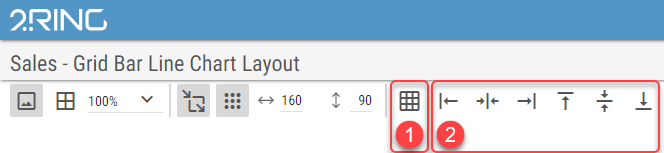
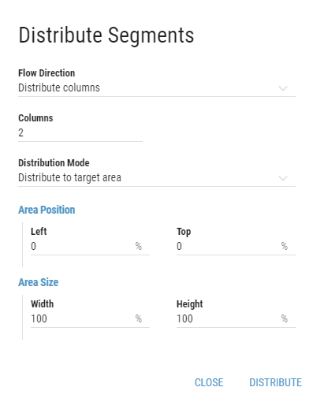

Positioning and Resizing in Preview¶
Positioning and Resizing¶
All segments present in the current Layout are displayed in Layout’s preview. When hovered over with mouse cursor, the hovered segment is highlighted with an orange glow and following actions can be made:
Clicking and dragging changes position of the segment.
Segments are moved simultaneously in the layout in case of moving a group of segments.
When hovering over the edge of the segment, clicking and dragging resizes the segment in the corresponding direction.
Figure 1: Segment positioning and resizing
Behavior of positioning and resizing can be changed with options located over the Layout preview. It contains the following options:
Figure 2: Positioning settings in the Layout
- Show/Hide Background
Whether the Layout’s background should be displayed in preview. If Snap to Grid option is enabled, the grid points can be more easily seen when background is hidden.
This option hides background only in edit mode. Background remains visible when viewing Layout outside of the edit mode.
- Show/Hide Borders
Whether segments borders should be displayed. Borders are displayed as a thin black line around the segment boundaries.
- Layout Zoom
Zoom of the layout preview area. The scrollbars appear when zooming the layout causes the preview area not to fit on the screen.
Available options are Best Fit, and every 10% on the scale of 50% - 200%
- Show Grid
Whether the grid points should be visible.
- Grid Size
Size of the grid, used when Snap to Grid is enabled.
{kind=link}
Position and Size of the Segment can be set also by filling in Top, Left, Height and Width properties of the Segment in Position and Size group. For more information see Editing a Segment chapter.
Figure 4: Position and Size settings
Segments Distribution and Alignment¶
If multiple segments need to be evenly distributed in the layout or aligned on either side for better clarity, the following features are available:
Figure 5: Segments Distribution and Alignment
- Distribute Segments
Segments distribution based on a criteria set by a user.
- Segments Alignment
Alignment of selected segments.
Distribute Segments
Selected segments can be distributed in the layout by clicking on the Distribute Segments button. Following dialog appears:
Only segments with the same size can be distributed.
Segments are distributed in order in which they were selected.
Figure 6: Segments Distribution dialog
- Flow Direction
Direction of the segment distribution.
If Distribute columns is selected, segments are distributed into columns.
If Distribute rows is selected, segments are distributed into rows.
- Columns/rows
Based on selected Flow Direction
Number of columns or rows, segments should be distributed into.
- Distribution Mode
Mode of segments distribution.
- Distribute to target area
User can define the position of the target area by filling the coordinates and size of the area. All fields are measured in percents of the Layout’s size.
- Left
Left boundary of the area.
- Top
Top boundary of the area.
- Width
Width of the area.
- Height
Height of the area.
- Distribute by fixed distances
Segments are distributed by fixed distances set by a user. All fields are measured in percents of the Layout’s size.
- Horizontal distance
Horizontal distance between segments.
- Vertical distance
Vertical distance between segments.
Selected segments are distributed based on the user preferences by clicking on the button.
Segments Alignment
Selected segments can be aligned by clicking on one of the following buttons:
Segments are aligned according to the segment that was selected first.
Figure 7: Alignment buttons
Segments are aligned to the left.
Segments are aligned to the horizontal center.
Segments are aligned to the right.
Segments are aligned to the top.
Segments are aligned to the vertical center.
Segments are aligned to the bottom.